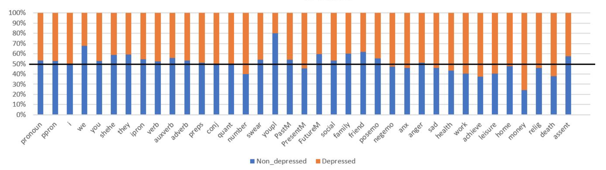
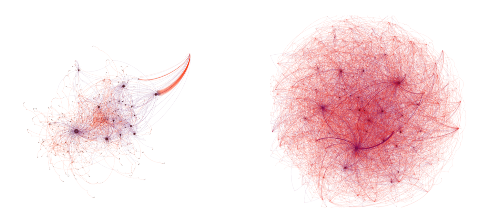

Overview
This is the final project of the Internet and Sociological Studies course. In this project, I leveraged text analysis and social network analysis techniques to explore the features of posts of younger depressed users on Sina Weibo (a popular micro-blogging application in China), and their interaction pattern. This is my first try to leverage computational methods to understand people's behavior on social media.
What I did
literature review, data crawling, text analysis, social network analysis and report writing
Why to do this Project
In 2012, a post posted by a depressed user before suicide got popular on Sina Weibo. This user's nickname is ZouFan, and her account soon received millions of comments from depressed users on Sina Weibo, as the post echoed their own feelings. This phenomenon attracted my attention -- the number of depressed users on social media surprised me, and I was curious about how they behave and present themselves on social media. What would they disclose on social media? Below is a screenshot of ZouFan's post -- "I have depression, and I want to die.Please don't pay attention to my leave. Goodbye.", and a large numder of depressed users left their comments under the post.
Datasets and Methods
I randomly selected 45 users who left comments under the post of ZouFan, and crawled their posts, including their original posts, reposted posts and the features of these posts (e.g., the number of reposts/comments/Likes received). All users selected have left comments related to depression under ZouFan's post. For comparison, I selected another 45 general users of Sina Weibo, and also crawled their posts. I then calculated the basic statistics of their posts, and leveraged text analysis and social network analysis to do further analysis.Results
I will briefly summarize the results. If you are interested in the full results, please go to the PDF (in Chinese).Basic Statistics
The main difference lies in the interaction features (i.e., depressed users interacted less with others).Meanwhile, the posts of depressed users contain fewer pics and emojis.
Text Analysis
LIWC2015
Depressed users are less likely to use plural personal pronouns such as "we", "they", "you" etc.Also, they use more present words than future words, which means they have fewer expectations for the future.
Not surprisingly, they express negative emotions more often than positive ones, and they also mention "death" and "money" more often than general users.

Keywords Extraction with TF-IDF
Obviously, the keywords in depressed users' posts are more often related to "depression".Topic Detection with LDA
Social Network Analysis
Obviously, depressed users interacted less with others.